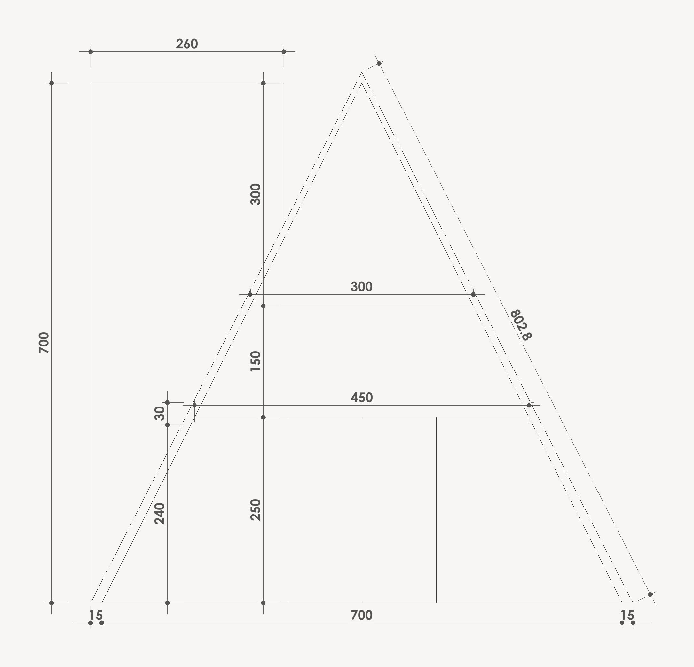
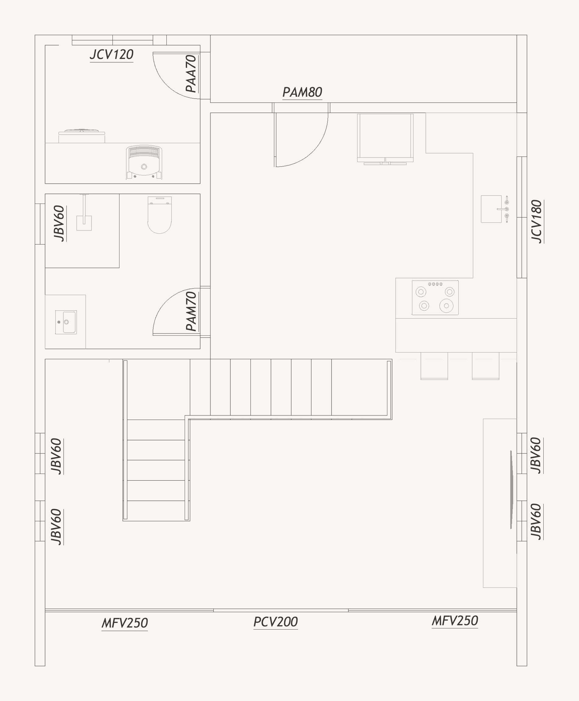
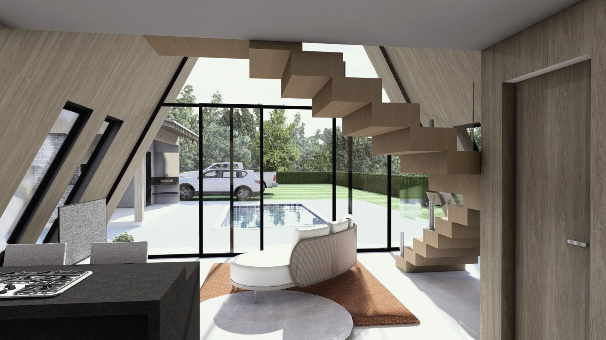
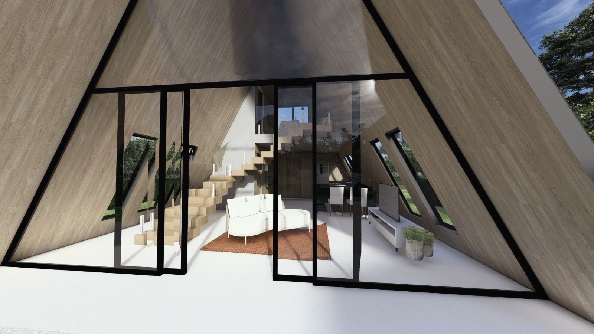

obras / chalés
Chalé Analândia

Cabana A-frame de dois pavimentos em steel framing, com piscina e churrasqueira.
- Local
- Analândia · SP
- Área total
- 132,03 m²
- Sistema
- Steel framing, paredes e laje em LSF
- Escopo
- Projeto executivo e projeto legal
- Etapa
- Projeto · 2025
Fachada


Interiores



